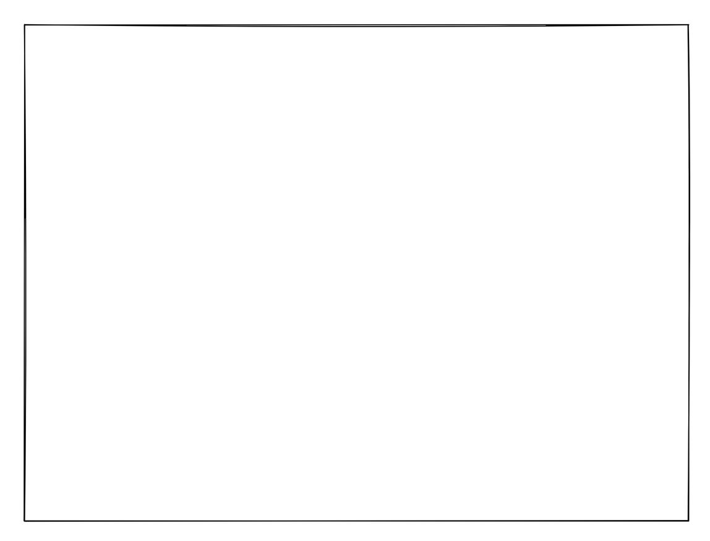

React 18 中的 Suspense SSR 架构
文章目录
原文标题: New Suspense SSR Architecture in React 18
React 18 将包括对服务端渲染（SSR）性能的架构改进。最重要的新的 API 是 renderToPipeableStream。可以在这里看到相关的 API 介绍。主要涉及到的之前的 API 是 <Suspense>。本篇是对新架构设计以及它解决的问题的介绍。
太长不看版
服务端渲染（SSR）即在服务端用 React 组件生成 HTML，并且将 HTML 直接返回给用户。SSR 允许用户在 JavaScript 资源加载和执行之前看到页面内容。
SSR 通常有以下几步：
- 在服务端，获取 app 所需要的数据；
- 在服务端，生成 HTML 并返回；
- 在客户端，加载应用所需 JavaScript 代码；
- 在客户端，把服务端生成的 HTML 与 JavaScript 逻辑结合（即 “hydration”）。
重点在于 每一步需要在上一步完成之后才可以开始。所以当某些部分比剩余部分逻辑慢的时候，就会影响整个应用加载的效率。
React 18 允许我们使用 <Suspense> 将应用分成独立的单元 ，这些单元可以单独完成这些步骤而且不会影响到应用的其他部分。因此用户可以快速看到应用的内容并且与之交互。即逻辑最慢的部分不会“拖慢”速度快的部分。这里有个demo。
什么是 SSR
当用户访问我们的应用时，作为开发者当然希望尽快呈现出可交互的页面：

使用绿色代表可交互的页面，即 JavaScript 事件处理程序也都添加结束。
这个页面在 JavaScript 代码加载结束之前，页面是不能响应用户交互的。这些代码包括 React 和业务代码。所以大多数时间都是在等待代码下载。
如果不使用 SSR，在 JavaScript 代码加载的时候用户只能看到一个空白页面：

因为空白页面交互不友好所以推荐使用 SSR。但是 SSR 也存在一个问题：无法马上可交互，除非是内置链接或者表单处理项。然而，SSR 可以让用户在 JavaScript 加载的时候看到页面：

这里使用灰色代替无法交互的部分。这段时间 JavaScript 代码还没有加载完，所以点击按钮并不会有任何响应。但对于内容繁重的网站 SSR 非常有用，因为它可以让网络连接较差的用户在加载 JavaScript 的同时开始阅读或查看内容。
当 React 和应用代码加载结束后，React 会将事件处理程序添加到 HTML 上，React 会在内存中渲染组件树，但不会为它生成 DOM 节点，而是将所有逻辑附加到现有的 HTML 中。
渲染组件并且添加事件的过程被称为“hydration”。因为这个过程像是在用交互性和事件处理程序的“水”注入到“干燥”的 HTML 中。在注水之后，我们的页面就会响应事件和状态更新，就像下图：
SSR 不会使应用程序更快地可交互，它只是尽快展示出应用无法交互的版本，所以用户可以在 JS 代码加载的时候看到静态页面。这个技巧对于网络连接不佳的用户来说体验有很大的不同，并提高了整体的感知性能。由于更容易索引和更快的速度，它还可以帮助我们进行搜索引擎排名。
提示：不要混淆 SSR 和 Server Components。Server Components 是一个实验中的特性，大概率不会成为初始化 React 18 中的一部分，可以在这里看到更多关于 Server Components 的内容。 Server Components 是 SSR 的补充，将成为推荐的数据获取方法的一部分，但这篇文章不涉及到相关知识。
当前的 SSR 存在哪些问题
需要在展示页面之前获取所有数据
目前我们了解到 SSR 的一个问题是不允许组件“等待数据”。在渲染页面之前，需要先获取到所有的数据。例如我们想渲染一篇有评论的博文，评论数据自然是很重要的，所以我们想要在服务端的 HTML 返回中就包括评论组件。但是如果数据库或 API 层较慢，我们就需要从中做选择。可以选择服务端生成的 HTML 中不包括评论组件，那用户就只能在 js 资源加载后看到评论信息。或者就选择服务端生成的 HTML 中包括评论组件，页面的导航栏、侧边栏就都需要等到评论数据返回才能渲染。
注水需要等待资源加载完成
JavaScript 代码加载结束后，React 会开始给 HTML 绑定事件来使页面可交互。React 将在渲染组件时“遍历”服务器生成的 HTML，并将事件处理程序添加上去。为了使事件正确绑定到元素上，浏览器中组件生成的树必须与服务器生成的树匹配。造成的结果就是 必须等待所有 JavaScript 加载结束，才能开始为其中任何一个组件添加事件绑定。
假设评论组件有非常复杂的交互逻辑，并且需要事件来加载相应的 JavaScript 代码。我们就又面临了两个选择：将评论内容在服务器生成 HTML，以便尽早向用户展示。但是因为只能一次性完成注水，所以在加载评论组件的代码之前，不能开始为导航栏、侧边栏和帖子内容添加交互响应。另一个选择就是可以做代码分割来进行分开加载，那就需要将评论内容从服务端渲染的 HTML 中移除。否则 React 将不知道如何处理这块 HTML 并在注水期间将其删除。
需要在注水结束后才可以进行交互
这是注水过程本身的问题。因为 React 注水是一次性的，意味着一旦开始绑定事件，就不会中断。因此，必须等待所有组件都被注水，然后才能与其中的任何一个部分进行交互。
继续我们的评论组件，假设它具有繁重的渲染逻辑，可能在我们的电脑上渲染速度很快，但是在某些低端设备上并不便宜，甚至可能会锁定屏幕几秒钟。当然理想情况下，我们根本不会在客户端上有这样的逻辑，但是对于某些重事件和交互的逻辑，这种情况也是有可能发生的。因此，一旦水合开始，用户就无法与导航栏、侧边栏或帖子内容进行交互，直到整个树被注水结束。对于用户期望的导航操作而言，这种体验是非常差的，因为 React 正在注水，会无法响应跳出页面的操作。
如何解决这些问题
这些问题之间有一个共同点。它们迫使我们在提前做某事（但会因为阻碍所有工作而影响用户体验）或延迟做某事（会因为浪费时间而影响用户体验）之间做出选择。
这是因为有一个“瀑布”：服务端获取数据 -> 服务端生成 HTML -> 加载代码（客户端）-> 注水（客户端）。在应用程序的前一个阶段完成之前，下一个阶段都不能开始。这就是它效率低下的原因。我们的解决方案是将工作分开，以便我们 可以为屏幕的一部分而不是整个应用程序执行每个阶段。
这并不是什么独特的想法：例如 Marko 是一个以这种思路实现的 JavaScript 框架。挑战在于如何使这样的模式与 React 编程模型结合起来。React 一开始引入 <Suspense> 组件的作用是在客户端支持懒加载。但目标是其实是将其与服务器渲染集成并解决目前的已知问题。
让我们学习一下如何在 React 18 中使用 <Suspense> 来解决这些问题。
React 18：流式 HTML 和选择性补水
Suspense 解锁了 React 18 中的两个主要 SSR 功能：
- 服务端流式 HTML：可以使用新的
renderToPipeableStreamAPI 替换renderToString来开启这个特性，像这里描述的一样。 - 客户端选择性补水：可以使用
createRoot并且将需要选择性注水的内容用<Suspense>包起来。
要了解这些功能的作用以及它们如何解决上述问题，让我们回到我们的示例。
获取数据之前流式渲染 HTML
当下的 SSR，渲染 HTML 和注水是 “要么全部要么全不”。首先渲染所有的 HTML：
|
|
客户端最终会获取这样的页面：
然后等加载完所有代码后会给应用注水：
但是 React 18 给了我们新的可能性。我们可以把应用的一部分包在 <Suspense> 中。
例如，我们可以包裹注释块并告诉 React 在组件准备好之前，应该显示 <Spinner /> 组件：
|
|
通过把 <Comments> 包裹到 <Suspense> 中，我们告诉 React 不需要等待评论即为页面的其余部分流式传输 HTML。并且浏览器会在这个位置显示一个占位符（一个旋转图）作为替代。

并且现在的 HTML 结构中是看不到评论组件的：
|
|
故事到现在并没有结束。当服务器的评论数据准备好后，React 会将额外的 HTML 发送到同一个流中，以及一个最小的内联 <script> 标记以将该 HTML 放在“正确的位置”：
|
|
结果，即使在 React 本身加载到客户端之前，迟到的评论 HTML 也会正常加载:
这就解决了我们的第一个问题。现在我们不需要在展示任何元素前获取所有的 HTML。如果初始页面
文章作者 xuyou
上次更新 2022-03-16